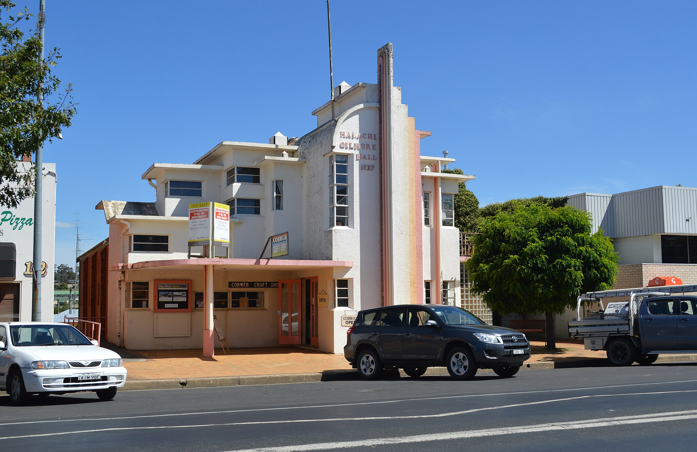

OCSN Mission Statement and principles
{kind=link}
Mission Statement
The Oberon Citizen Science Network (OCSN) exists to promote both interest in science, technology, engineering and maths (STEM) amongst residents of Oberon Local Government Area, and active participation in local STEM projects and other scientific endeavours. It is open to everyone who is committed to the scientific method, regardless of their training and educational background. OCSN will also adhere to the principles of open science, in which all data, data analysis methods and findings are made publicly available, regardless of what the data show. OCSN members and participants are interested in discovering the truth through science, not in confirming already-held beliefs and prejudices – even when the truth may be uncomfortable.
Oberon Citizen Science Network (OCSN) is a strictly non-political organisation that does not and will not have any allegiances with or accept any support from political parties or organisations associated with political parties, nor any lobby group seeking to influence the political process or political decisions, at any level of government.
OCSN may accept funding for its activities from government, corporations or individuals, but all such funding will be openly declared on this web site and only be accepted if it does not come with conditions which limit what OCSN may say or publish about the science and other STEM activities it undertakes – that is, we will not accept any funding that comes with conditions of censorship or other restrictions which are in conflict with the principles of open science.
Of course, individual members and participants of OCSN may hold political allegiances or be members of political parties or lobby groups, as is their right as individuals, but they must not represent such views or allegiances as those of OCSN. Please see the OCSN Articles of Association and OCSN Code of Conduct for more details.
Methods
OCSN will pursue its mission by:
- organising science-based or other STEM projects in the local area in which OCSN members can participate in a wide variety of roles
- encouraging OCSN members to participate individually or as a group in citizen science projects and initiatives run by other organisations – for example, the excellent FrogID project run by the Australian Museum.
- engaging with the local community through outreach to schools and by organising occasional community events
- using appropriate web, social media and mainstream media channels to publicise OCSN activities and disseminate the results of the projects it organises
- affiliating and co-operating with other appropriate citizen science organisations, both nationally and internationally, such as the Australian Citizen Science Association
- seeking funding from government and approporiate philanthropic sources as well as sponsorship from local businesses for its activities, provided any conditions associated with such funding are compatible with the principles of open science.
Raising STEAM
STEAM stands for Science, Technology, Engineering, Arts and Maths. We hope to be able to organise (and obtain funding for) a joint STEAM event at Oberon’s wonderful art deco Malachi Gilmore Hall in cooporation with its owners, Lucy and Johnny East, possibly during National Science Week in August 2025 (10-18 August), or earlier. Such an event would combine some live music, art exhibitions with presentations (and demonstrations) of OCSN projects, as well as guest speakers on science and arts topics of interest. 1
Ten Principles of Citizen Science
OCSN seeks to adhere to and implement the ten principles of citizen science developed by researchers at a number of European and British universities, and adopted by the Australian Citizen Science Association. The formal paper describing the principles is available here, but in a nutshell they are:
- Citizen science projects actively involve citizens in scientific endeavour that generates new knowledge or understanding. Citizens may act as contributors, collaborators, or as project leader and have a meaningful role in the project.
- Citizen science projects have a genuine science outcome. For example, answering a research question, informing conservation action, or facilitating policy decisions.
- Citizen science provides benefits to both science and society. Benefits may include learning opportunities, personal enjoyment, social benefits, the publication of research outputs, contributing to scientific evidence that can influence policy on many scales (locally, nationally, and internationally), and connecting the wider community with science.
- Citizen scientists may participate in various stages of the scientific process. This may include developing research questions, designing methods, gathering and analysing data, and communicating results.
- Citizen scientists receive feedback from the project. For example, how their data are being used and the research, policy or societal outcomes.
- Citizen science, as with all forms of scientific inquiry, has limitations and biases that should be considered and controlled for. However, unlike traditional research approaches, citizen science provides greater opportunity for public engagement and participation, increasing accessibility of science in society.
- Where possible and suitable, project data and meta-data from citizen science projects are made publicly available and results are published in an open access format. Data sharing may occur during or after the project, unless there are security or privacy concerns that prevent this from occurring.
- Citizen scientists are suitably acknowledged by projects. This may include acknowledgement in project communications, result reporting and publications.
- Citizen science programs offer a range of benefits and outcomes which should be acknowledged and considered in project evaluation. Communication and evaluation of projects could include scientific outputs, data quality, participant experience and learning, knowledge sharing, social benefits, capacity building, new ways of science engagement, enhanced stakeholder dialogue, and wider societal or policy impact.
- The leaders of citizen science projects take into consideration legal and ethical considerations of the project. These considerations include copyright, intellectual property, data sharing agreements, confidentiality, attribution, participant safety and wellbeing, traditional owner consultation, and the environmental impact of any activities.
Presentation on the Ten Principles
This is a presentation in 2020 by Dr Sam Illingworth, who teaches science communication at the University of Western Australia: